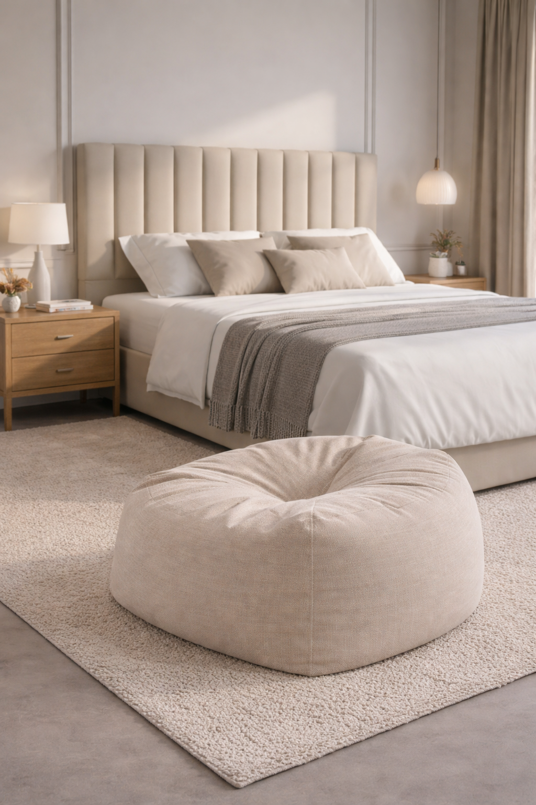
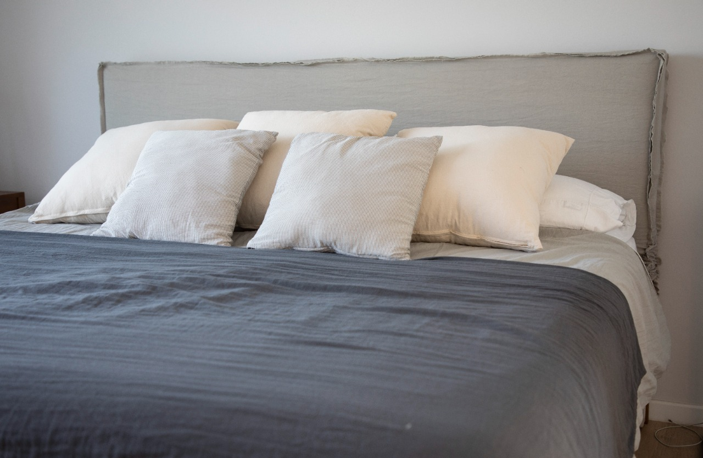
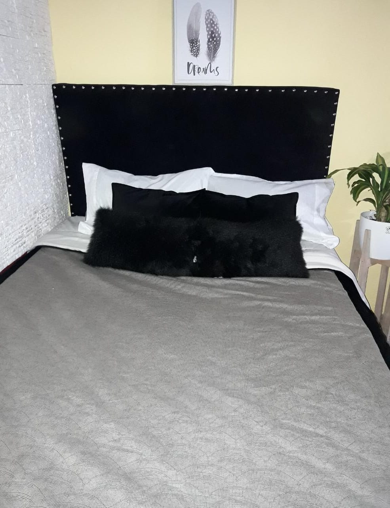
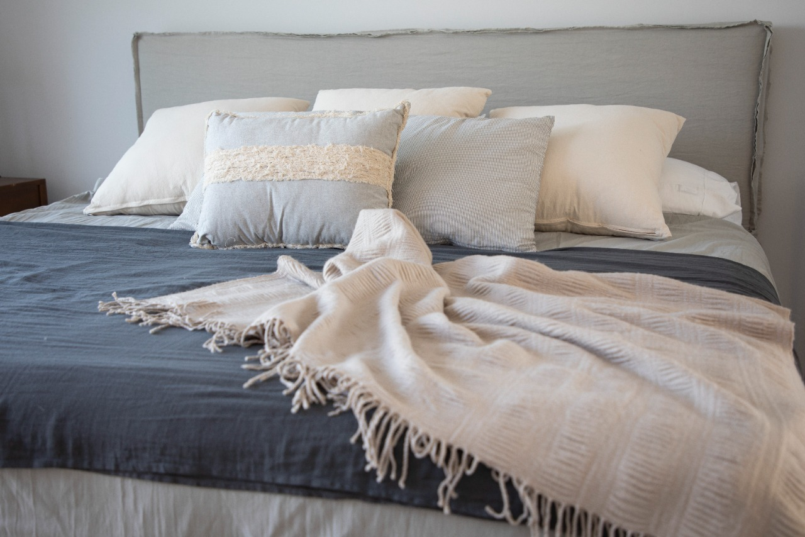

Respaldos de Cama Modelo Canelón
Diseño vertical elegante y sofisticado para dormitorios y camas sommier. Tapizados personalizados y terminaciones artesanales, fabricados a medida por Decogri en Don Torcuato.
CONSULTAR MODELO
Diseño vertical elegante y sofisticado para dormitorios y camas sommier. Tapizados personalizados y terminaciones artesanales, fabricados a medida por Decogri en Don Torcuato.
CONSULTAR MODELO
Estética relajada en género Tussor. Disponibles en modelos Clásico y Rústico, ideales para quienes buscan un respaldo de cama práctico, lavable y adaptable a distintos dormitorios.
CONSULTAR FUNDAS
La combinación entre lo clásico y lo moderno. Respaldos tapizados con aplicación de tachas decorativas, realizados artesanalmente para aportar carácter y terminación al dormitorio.
CONSULTAR MODELO
Medidas personalizadas para adaptar el respaldo a distintos tamaños de cama y sommier. Fabricación directa en Don Torcuato para diseñar una pieza acorde a tu dormitorio y espacio disponible.
CONSULTAR MEDIDAS